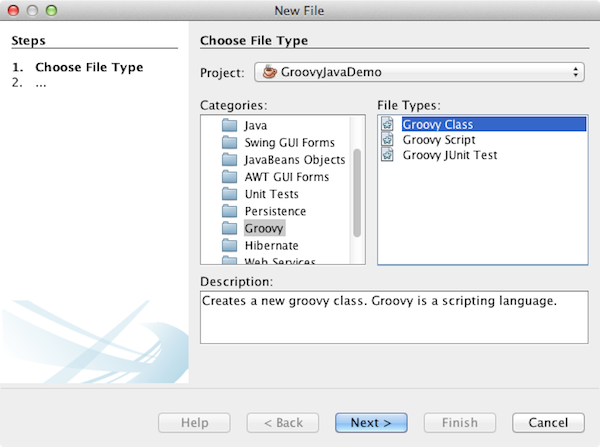

Apache NetBeans
Apache NetBeansLatest release
Введение в Groovy
| This tutorial needs a review. You can open a JIRA issue, or edit it in GitHub following these contribution guidelines. |
Этот документ используется для начала работы с Groovy в IDE NetBeans. В процессе работы будет создано приложение на языке Java, добавлен элемент JFrame, а из файла Groovy будет получено простое сообщение.

Figure 1. Содержимое этой страницы применимо к IDE NetBeans 7.2, 7.3, 7.4 и 8.0
Для работы с этим учебным курсом требуется следующее программное обеспечение и ресурсы.
| Программное обеспечение или материал | Требуемая версия |
|---|---|
пакет Java, версии 7.2, 7.3, 7.4, 8.0 |
|
версия 7 или 8 |
|
Подключаемый модуль Groovy |
- |
Активация подключаемого модуля Groovy
Поддержка Groovy отключена по умолчанию при установке Java-версии среды IDE. Для работы с Groovy в IDE сначала необходимо активировать подключаемый модуль Groovy в диспетчере подключаемых модулей.
-
Выберите 'Сервис' > 'Подключаемые модули' в главном меню, чтобы открыть диспетчер подключаемых модулей.
-
Перейдите на вкладку Установлено в диспетчере подключаемых модулей.
-
Выберите 'Показать сведения' и найдите подключаемый модуль Groovy и Grails в списке подключаемых модулей.
В качестве альтернативы вы можете ввести groovy в поле поиска, чтобы отфильтровать список подключаемых модулей.
-
Установите подключаемый модуль 'Groovy and Grails' и нажмите 'Активировать'.

Figure 2. Подключаемый модуль 'Groovy' выбран в диспетчере подключаемых модулей
-
Нажмите кнопку 'Активировать' в окне 'Мастер установки NetBeans IDE', чтобы активировать подключаемый модуль Groovy.
-
Нажмите кнопку 'Завершить' в окне 'Мастер установки NetBeans IDE' после завершения установки и затем нажмите 'Закрыть' в диспетчере подключаемых модулей.
Создание приложения
В этом разделе вы узнаете, как создать новое приложение Java.
-
Выберите 'Файл > Создать проект' (Ctrl-Shift-N; ⌘-Shift-N в Mac) в главном меню, чтобы открыть мастер создания проектов.
-
В категории Java выберите 'Приложение Java'. Нажмите кнопку "Далее".
-
В поле 'Имя проекта' введите GroovyJavaDemo, а в поле 'Местоположение проекта' укажите папку, где будет создано приложение.
-
Снимите флажок "Создать главный класс". Нажмите кнопку "Готово".
При нажатии на кнопку 'Готово' IDE создает проект, который отображается в окне 'Проекты'.
Создание класса Java и файла Groovy
В этом разделе вы узнаете, как создать элемент JFrame и класс Groovy.
-
Щелкните правой кнопкой мыши узел проекта в окне 'Проекты' и выберите 'Создать > Другое'. Откроется диалоговое окно мастера создания файлов.
-
В категории 'Формы Swing GUI' выберите 'Форма JFrame'. Нажмите 'Далее'.

Figure 3. Шаблон формы JFrame в мастере создания файлов
-
В поле 'Имя класса' введите DisplayJFrame.
-
В поле 'Пакет' введите org.demo. Нажмите 'Готово'.

Figure 4. Панель 'Имя и местоположение' в мастере создания форм JFrame
При нажатии на кнопку 'Готово' в среде IDE создается форма JFrame, и в редакторе открывается соответствующий файл.
-
Щелкните правой кнопкой мыши узел проекта в окне 'Проекты' и выберите 'Создать > Другое'. Откроется диалоговое окно мастера создания файлов.
-
В категории Groovy выберите 'Класс Groovy'. Нажмите 'Далее'.

Figure 5. Шаблон класса Groovy в мастере создания файлов
-
В поле 'Имя класса' введите GreetingProvider.
-
В списке 'Пакеты' выберите пакет
org.demo. Нажмите кнопку "Завершить".
При нажатии на кнопку 'Готово' IDE создает файл Groovy и открывает его в редакторе.
Если развернуть узел проекта в окне 'Проекты', можно увидеть два только что созданных файла под узлом 'Исходные пакеты'.
Вызов файла Groovy из класса Java
В этом разделе вы узнаете, как создать код для взаимодействия между файлом Groovy и классом Java.
-
Откройте файл
GreetingProvider.groovyв редакторе (если он еще не открыт). -
Задайте переменную приветствия в определении класса, добавив следующий код (выделен полужирным шрифтом). Сохраните изменения.
class GreetingProvider {
*def greeting = "Hello from Groovy"*
}-
Откройте файл
DisplayJFrame.javaв редакторе (если он еще не открыт) и перейдите на вкладку 'Конструирование'. -
Откройте палитру (выберите 'Окно > Палитра' в главном меню) и перетащите элемент 'Текстовое поле' (
jTextField) и палитры на форму JFrame.

Figure 6. Элемент JTextfield в файле DesignJFrame на вкладке 'Конструирование' в редакторе
-
Перейдите на вкладку 'Исходный код' и добавьте следующий исходный код в верхнюю часть тела класса, чтобы создать экземпляр класса Groovy и вызвать метод
getGreeting()в классе Groovy в конструкторе.
public class DisplayJFrameForm extends javax.swing.JFrame {*
GreetingProvider provider = new GreetingProvider();*
public DisplayJFrame() {
initComponents();
*String greeting = provider.getGreeting().toString();
jTextField1.setText(greeting);*
}Для поиска в классе Java методов, необходимых для класса Groovy, можно использовать автозавершение кода.

Figure 7. Автозавершение кода в редакторе
-
Щелкните правой кнопкой мыши узел проекта в окне "Проекты" и выберите "Выполнить".
Если выбрать команду 'Выполнить', IDE выполнит сборку и запуск приложения.

Figure 8. Окно приложения с текстом из класса Groovy в текстовом поле
В текстовом поле в окне приложения отображается текст из класса Groovy.
Теперь читатель может создать базовое приложение на языке Java, взаимодействующее с Groovy.
Дополнительные сведения
IDE NetBeans также поддерживает веб-платформу Grails, в которой используется язык Groovy при веб-разработках на Java. Дополнительные сведения об использовании платформы Grails с IDE NetBeans см. в разделе Введение в платформу Grails.